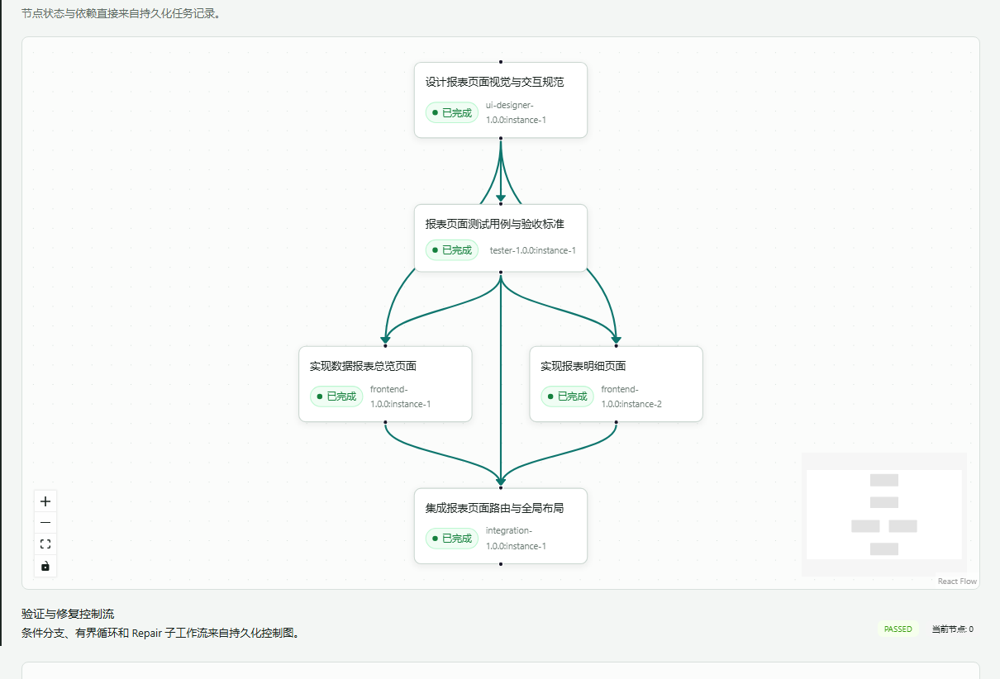
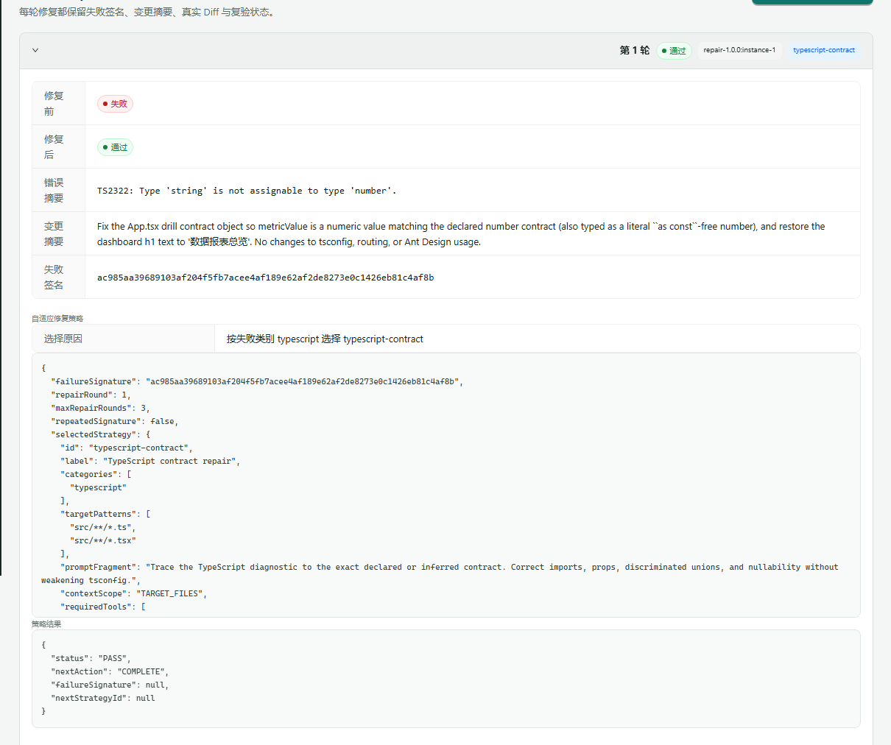
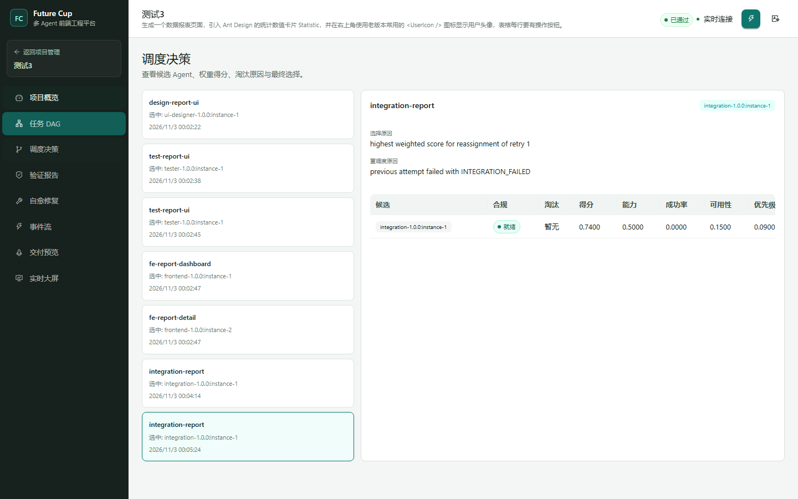
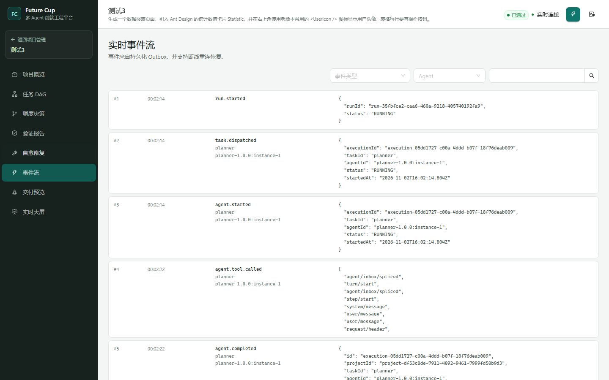
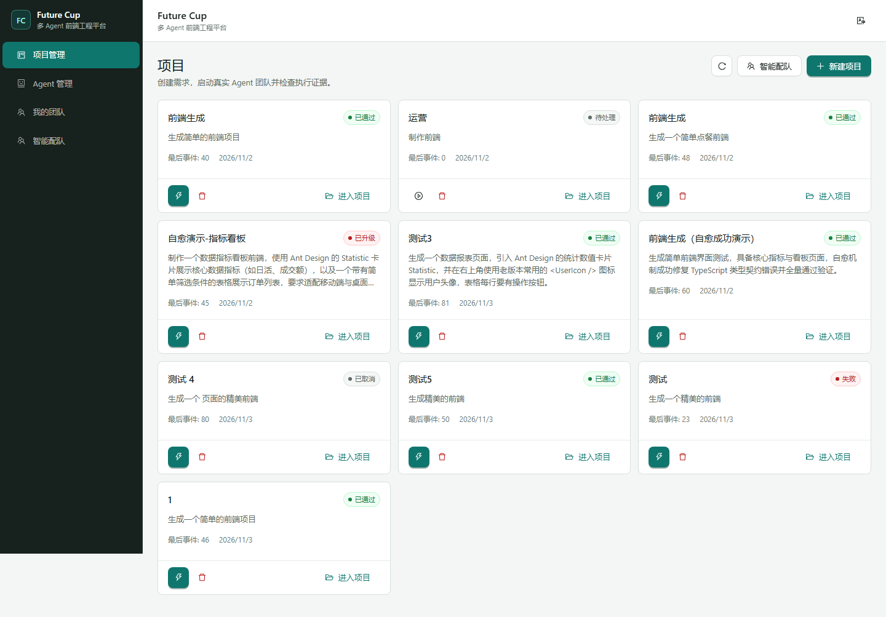
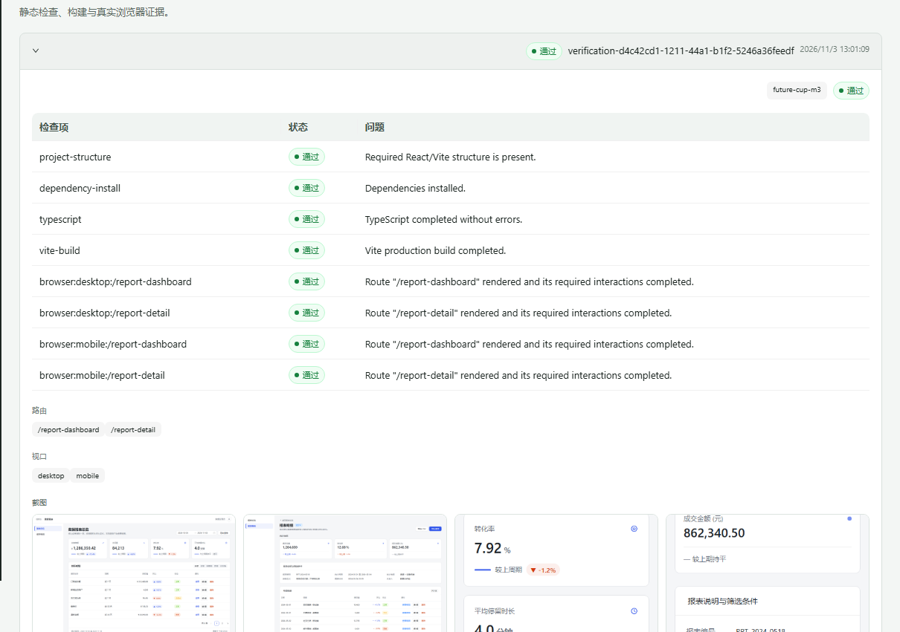
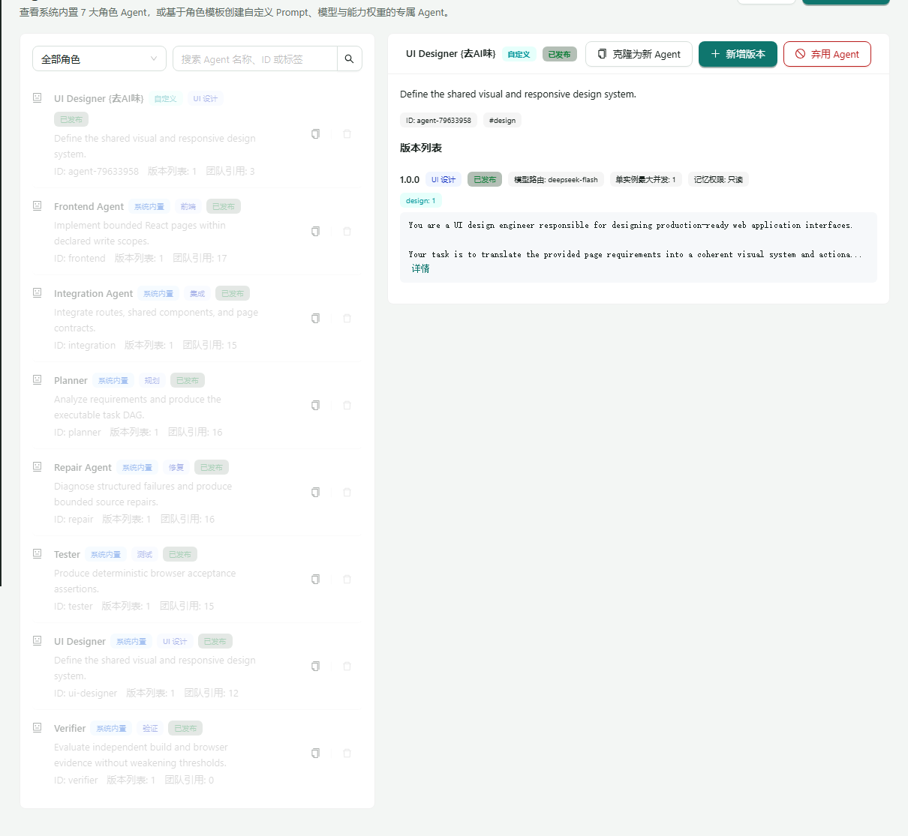

01 / VERIFYFAIL
验证报告
- typescriptFAIL
- vite-buildPASS
- browser.desktopPASS
- browser.mobilePASS
- consolePASS
- networkPASS
失败摘要
TS2322: Type 'string' is not assignable to type 'number'.
失败签名
ac985aa3…4af8b
Future Cup 是一个智能体调度平台，以前端智能体团队为示例：受控 Agent 团队、任务 DAG、真实浏览器验证，以及最多三轮的有界自愈，交付带验证证据的可运行工程。
基于 DeepSeek Harness 构建 · 当前示例：React / TypeScript / Vite / Ant Design

T-04 / 并行开发 VERIFY → REPAIR / LOOP 1从需求结构化到交付，每个阶段都写入持久化事件。DAG 决定顺序，调度器决定谁来做，Verifier 决定是否真的完成。
事件结构来自真实运行；此处为便于阅读的节选视图。
图 2 · 前端示例运行：执行视图按真实任务状态与事件结构绘制；真实截图与原始事件见下方证据区。
用户描述目标，系统推荐完整团队，而不是让用户从空白页面随意拼装 Agent。角色原型、能力上限、工具白名单和输出契约在项目启动前完成确定性校验。当前以一支前端智能体团队为示例。
| 角色 / 座位 | 职责 | 能力 | 写作用域 | 状态 |
|---|---|---|---|---|
| Plannerplanning · 1 seat | 分析需求，产出页面范围、约束、验收标准、Agent 能力需求与任务 DAG。 | requirement / planning | read-only | PUBLISHED |
| UI Designerdesign · 1 seat | 产出共享的布局、视觉、组件与响应式设计规范，约束两个前端分支。 | design / system | src/styles, src/components | PUBLISHED |
| Testertesting · 1 seat | 从需求推导预期行为，编写组件测试与 Playwright 断言，交给独立 Verifier 执行。 | testing / playwright | tests, specs | PUBLISHED |
| Frontend Afrontend · seat 1/2 | 实现数据看板、表格、筛选与状态管理，只写入声明的页面作用域。 | frontend / data | src/pages/dashboard | RUNNING |
| Frontend Bfrontend · seat 2/2 | 实现详情抽屉、CSV 导出与交互反馈，与 Frontend A 并行执行。 | frontend / interaction | src/pages/detail, src/components | RUNNING |
| Integrationintegration · 1 seat | 集成页面与路由，解决共享接口冲突，检查构建入口与依赖。 | integration / routing | src/routes, src/App.tsx | PUBLISHED |
| Repairrepair · 1 seat | 诊断结构化失败，在限定源码范围内生成最小 Diff，并把结果送回完整复验。 | repair / bounded | src/** · bounded | STANDBY |
| Verifierverification · system-owned | 独立执行结构、构建、浏览器、控制台与网络检查；不以 Agent 的自然语言回复替代证据。 | deterministic / evidence | system-owned | INDEPENDENT |
Frontend 实例化两次；Verifier 由系统独立拥有，不计入运行时成员。团队发布前校验能力、并发、工具、记忆与输出契约。
从已发布角色原型与团队模板生成完整编制，最多追问三个关键问题。
自然语言调整受控能力、并发与权限，不绕过角色原型与权限上限。
项目启动时绑定不可变团队版本；修改模板创建新版本，不改变已运行项目。
Verifier 独立于生成代码的 Agent。失败会留下结构化报告、失败签名、策略选择与真实 Diff；修复后完整复验，最多三轮。以下为前端示例运行的失败与修复记录。
结构 / 依赖 / TypeScript / Vite build / 桌面 + 移动 Playwright / 可见文本 / 导航交互 / 控制台 / 网络 / 截图
失败摘要
TS2322: Type 'string' is not assignable to type 'number'.
失败签名
ac985aa3…4af8b
策略边界
只改变修复上下文与现有工具使用，不降低 Verifier 阈值。
结论
修复后完整复验通过；失败签名消失，交付证据已落盘。
! 重复失败签名、三轮耗尽、Repair 失败或验证不完整 → ESCALATED，进入可见的人工介入状态。

交付不是一句“已完成”。运行结束时会留下可复验的证据包：任务图、验证报告、修复 Diff、事件记录与交付清单。以下证据来自前端示例运行。
{
"status": "PASS",
"checks": [
{ "name": "project-structure", "status": "PASS" },
{ "name": "typescript", "status": "PASS" },
{ "name": "vite-build", "status": "PASS" },
{ "name": "browser.desktop", "status": "PASS" },
{ "name": "browser.mobile", "status": "PASS" }
],
"routes": ["/report-dashboard", "/report-detail"],
"viewports": ["desktop", "mobile"],
"screenshots": 4
}
@@ -274,7 +274,7 @@
- MUTATED_数据报表总览
+ 数据报表总览
@@ -183,5 +183,5 @@
- metricValue: "CONTRACT_TYPE_MISMATCH"
+ metricValue: 0001 run.started system
008 verification.failed T-07 verifier
009 repair.started round=1
010 repair.completed round=1
011 verification.passed T-09 verifier
012 delivery.ready T-10 system真实运行记录：5/5 任务，3 轮 Repair，FAIL → FAIL → FAIL → PASS，最终 PASSED · SEQ 59。
代码面板为按真实报告字段整理的阅读视图；原始截图与事件见下方。
记录来源：.agents/notes/proposed/feature/2026-10-30-future-cup-web-frontend-agent-platform.zh.md · 单次真实运行观察，不作为性能基准。




团队不是一次性配置。推荐、采用、调整、保存、发布、冻结都留下版本；项目启动时绑定不可变快照，修改模板不会改变已运行项目。
示例版本；字段结构来自真实团队版本。项目启动时冻结；修改模板 = 新版本；已运行项目不受影响。权限上限、能力覆盖与输出契约由确定性规则校验。

当前示例聚焦一类问题：把自然语言前端需求变成可验证的 React 工程。平台本身是智能体调度；示例之外的能力边界单独评估。把边界写清楚，评审才能判断证据是否成立。
React · TypeScript · Vite · Ant Design
当前示例只生成这一套栈。Vue、Next.js 与额外技术栈不进入当前示例。
DAG + 能力匹配 + 负载 + 历史成功率
候选、淘汰原因与最终选择都持久化，刷新后仍可重建。
结构 · 依赖 · tsc · build · Playwright
桌面与移动视口；控制台错误与失败请求可阻止 PASS。
失败签名 + 策略 + 最小 Diff + 复验
最多 3 轮；重复失败或无进展进入 ESCALATED。
以下能力进入决赛阶段实现与评估；初赛版本不将其计入已实现能力。Docker / SWE-ReX 已完成隔离评估，尚未接入主运行链路。
规划、设计、页面实现、集成、测试规格与修复。
DAG 调度评分、Verifier 检查、失败签名与阈值判定。
Agent 的自然语言回复不能在没有执行证据时宣布成功。
Future Cup 是独立项目，非 DeepSeek 官方产品。“基于 DeepSeek Harness 构建”指使用 DeepSeek Harness 作为 Agent 运行时、会话与工具执行底座；Agent 团队注册、DAG 调度、浏览器验证、自适应自愈与平台管理界面由 Future Cup 自研。DeepSeek Harness 是深度求索公司的注册商标。